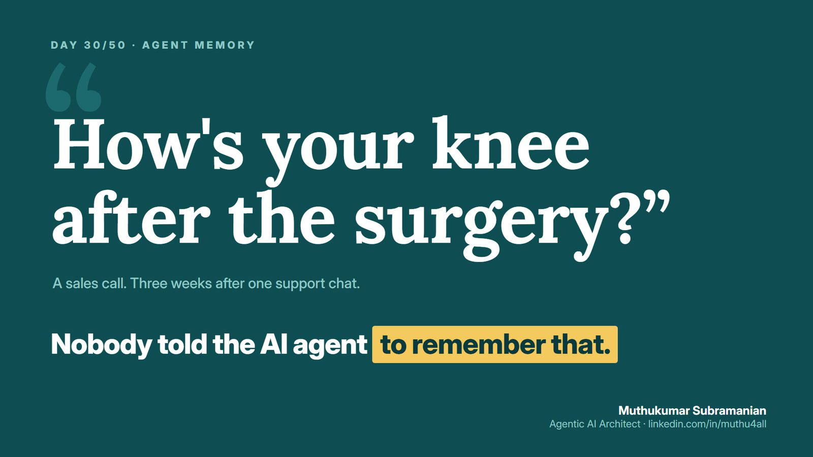
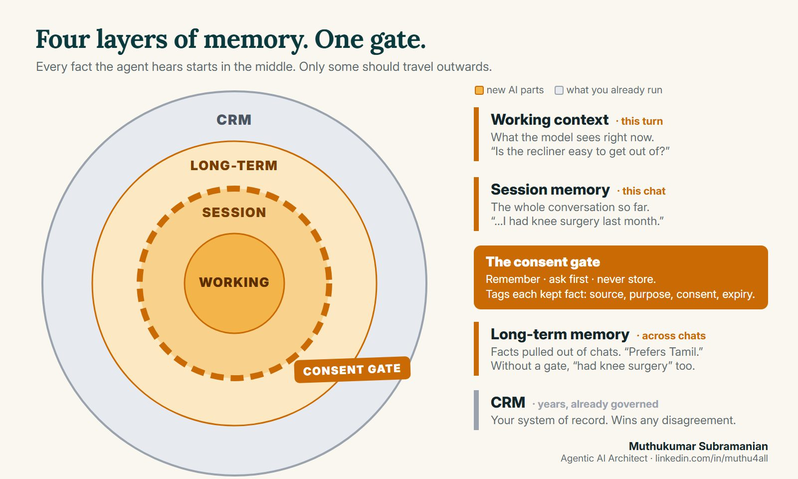
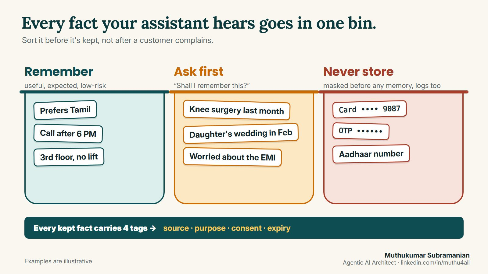
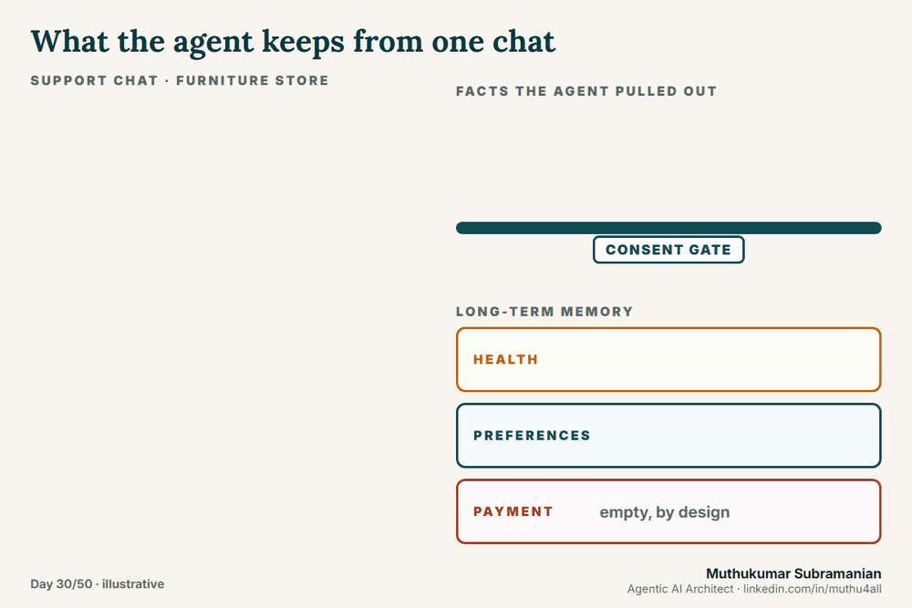

"How's Your Knee After the Surgery?" Nobody Told the AI Agent to Remember That.
By Muthukumar Subramanian · Agentic AI Architect

Priya is in a meeting in Coimbatore when her phone rings. A cheerful voice from the furniture store she bought a recliner from last month.
"Hi Priya! How's your knee after the surgery? We've got a new orthopaedic mattress you'll love."
She goes quiet. She'd mentioned the surgery once, three weeks ago, in a support chat, while asking whether the recliner was easy to get out of. She never told a salesperson. She never told anyone to remember it.
Nobody hacked anything. The store's AI assistant did exactly what it was built to do: it remembered. (Priya and the store are a composite, and the details are illustrative. The pattern isn't.)
Priya didn't buy the mattress. She also stopped trusting the store.
The architecture today
Most assistants now have some kind of memory, and it usually comes in four layers:
→ Working context: what the model sees right now, this turn. Gone when the turn ends.
→ Session memory: the whole conversation so far. Gone when the chat closes, or soon after.
→ Long-term memory: facts the agent pulls out of conversations and keeps across sessions, usually in a vector or graph store. "Prefers Tamil." "Has a dog." "Had knee surgery."
→ The system of record: your CRM. Orders, addresses, consent flags, the stuff the business has always kept and governed.
The CRM has had rules for years: who can see what, how long it's kept, what marketing may use. The long-term memory store often has none. It sits beside the CRM, fills itself from every chat, and any agent with access can read it. That's where the knee went.

Where AI plugs in now: remember less, on purpose
The low-risk start isn't "turn memory on". It's an allow-list.
→ Let the agent keep only a short list of things that help the customer: preferred language, preferred time to call, delivery floor, "no calls on Sundays".
→ Everything else stays in the session and dies with it.
→ Show the customer what's remembered, in plain words, with a delete button next to each line.
That alone would have saved Priya's afternoon. A recliner question goes in the session. "Prefers WhatsApp in Tamil" goes in memory. A surgery goes nowhere unless she says so.
An assistant that remembers everything isn't helpful. It's a liability with good manners.
Where it's heading with agents: memory with a gate
In two or three years I expect long-term memory to look less like a notebook and more like a governed store, with a gate in front of it. Every fact that wants in gets sorted into one of three bins:
- Remember: low-risk, useful, expected. Language, preferences, sizes.
- Ask first: useful but personal. Health, family events, money worries. The agent asks "Shall I remember this for next time?" and stores the answer along with the fact.
- Never store: card numbers, OTPs, Aadhaar numbers, passwords. These get masked before they reach any memory layer, including the logs.
And every remembered fact carries four tags: where it came from, what it may be used for, who agreed, and when it expires. Support memory doesn't quietly become sales memory.

Why this matters more in India from next May
I'm not a lawyer, and this isn't legal advice. But the timing is worth knowing.
India's Digital Personal Data Protection Act, 2023 got its Rules on 13 November 2025, with a phased start. The consent manager provisions began this month, a year after notification. Most of the substantive duties, including notice, consent and the rights to correction and erasure, apply from 13 May 2027.
Two parts of that land squarely on agent memory. A business has to erase personal data once consent is withdrawn or the purpose is no longer being served. And a customer can ask for her data to be erased.
Now picture Priya asking. The CRM team deletes her record. But the knee is also in the memory store, in two chat summaries, in an embedding, in a nightly backup, and in a call brief a sales agent already generated. Forgetting has to reach all of them.
Even the big consumer assistants show how tricky this is. OpenAI's own help page says deleting a chat doesn't delete the saved memories that came from it. You remove those separately.
Remembering is a feature. Forgetting is architecture.
Watch it work

Pros
→ Customers don't repeat themselves. That's real kindness at scale
→ Agents get better context, so fewer wrong answers and faster resolutions
→ A governed memory store is easier to audit than chat logs scattered across tools
Cons
→ Every remembered fact is something you can leak, misuse or be asked to erase
→ "Ask first" adds friction, and some teams will quietly switch it off
→ Memory makes agents feel personal, which makes a wrong memory feel like a betrayal
The hard parts
The agent decides what counts as a fact. Extraction is done by a model reading the chat, so "my mother had knee surgery" can become "Priya had knee surgery". Wrong memories are worse than none.
Copies multiply. Summaries, embeddings, logs, analytics exports, backups. If you can't list every place a fact lives, you can't promise to erase it.
Memory can be poisoned. Anyone who can talk to the agent can try to plant a "fact" that changes how it treats them, or someone else, later.
Memory and the CRM will disagree. The CRM says Chennai; the memory says "moved to Bengaluru". Pick one rule: the system of record wins until a person confirms the change.
And I honestly don't know where the line between "helpful" and "creepy" sits for every customer. It moves with age, region and context. That's why "ask first" exists.
A new role fits here. A context engineer decides what goes into an agent's context window and memory, and what never should. It overlaps with prompt engineering and data governance, and the titles are still settling. In practice it's often a forward deployed engineer (FDE), someone who works inside the customer's team, sitting with support and compliance for two weeks and turning "we'd never use that for sales" into a written memory policy.
The opportunity
Who pays: every company putting an assistant in front of customers. Banks, insurers, hospitals, telecoms, retailers, edtechs. And they need it before May 2027, not after.
What it creates:
→ Memory governance as a service: what to remember, what to ask, what to forget, written as policy and enforced in code
→ Consent-aware memory layers: every fact tagged with source, purpose, consent and expiry, with a gate in front
→ Memory audits: "show me everything your agents remember about this customer, and why", in one screen
→ Erasure that actually propagates: one request, cleared from the memory store, summaries, embeddings and logs, with proof
→ Context engineering and FDE-led rollouts: a few weeks inside a CX team, leaving behind a memory policy and the tests that check it
Day 29 was about an agent inheriting 30 years of an accountant's know-how. That's memory a company wants to keep. Today is the other half: memory a customer never agreed to give.
Tools to try
Mem0 and Zep for long-term memory layers · LangGraph's memory store (with LangMem) if you already build on LangGraph · Amazon Bedrock AgentCore Memory for short- and long-term memory on AWS · ChatGPT memory, Claude memory and Gemini's personal context as reference designs: try their "show me what you remember" and delete controls, and copy what works.
Your turn 👇
Should an AI assistant remember anything you didn't ask it to? Yes or no.
Tag the person in your company who owns the CRM. They'll want to know what the assistant is keeping beside it.
Day 30 of 50 · follow along. Tomorrow: Day 31 · I Was Wrong About Autonomous AI Agents. Most Jobs Need a Checklist.